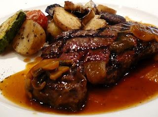

Recetas de la Abuela
Deliciosas recetas caseras
Carne al horno con papas

Ingredientes:
- 1 kg Vacío
- Papa
- Calabaza
- Cebolla
- Morrón
- Batata
- Repollo colorado
- Zanahoria
- Condimentos a gusto!
Preparacion
- el horno y dejar calentar mientras cortamos las verduras
- En una fuente para horno colocamos la carne salpimentada.
- Cortamos todas las verduras de tamaño parejo salvo las batatas y zapallo que lo cortamos un poquito más grande que la papa por ejemolo ya que estos se cocinan más rápido.
- Colocar encima de la carne y condimentar a gusto.(Yo le puse sal, pimienta, ají molido y orégano.) aceite de oliva para hidratar un poco y al horno.
- Listo! A comer!